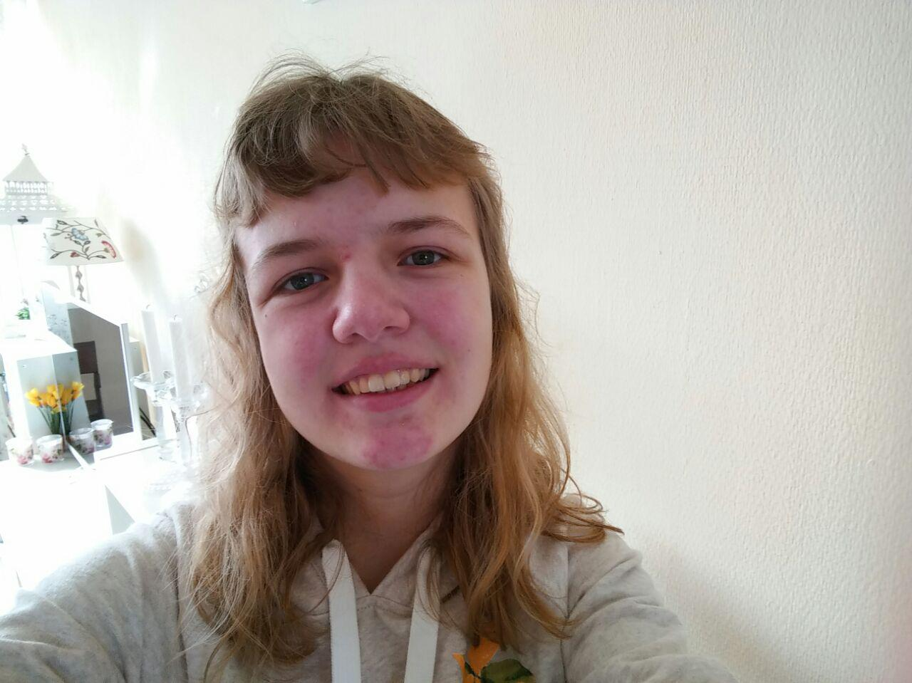

Wij hebben drie rekenmachines ontworpen:
Tot slot is er ook nog een pagina gemaakt met informatie over de makers.
Welkom op de pagina met de rekenmachine die decimale getallen omrekent naar binaire getallen.
Welkom op de pagina met de rekenmachine die Euro's omzet in Dollars.
Welkom op de pagina met de rekenmachine die een inkomen uitrekent.
De makers van deze site zijn Daphne Oudejans en Annemarieke van Dijk. Deze site is gemaakt ter gelegenheid van het tweede PO van informatica.
Wij zitten beiden op RSG Broklede in Breukelen. Wij doen 4 vwo en hebben beiden informatica als extra vak gekozen.
Onze samenwerking verliep goed. Echter, omdat wij dit vak als extra vak hebben, hadden wij minder tijd in de les dan anderen. Deze site is dan ook voornamelijk thuis gemaakt, zonder toeziend oog van de beste informatica docent van Breukelen en omstreken, Remie Woudt.
Ter conclusie; wij vonden het prettig om samen te werken.
Annemarieke van Dijk |
Daphne Oudejans |
|

Annemarieke is zestien jaar oud en woont in Breukelen. Zij heeft het profiel Natuur en Techniek gekozen, met de vakken Duits, biologie, tekenen en informatica. Annemarieke heeft de bijnaam Annie gekregen, aangezien haar naam uit wel vijf lettergrepen bestaat! In haar vrije tijd, maakt Annie graag foto's. Ook vindt zij het leuk om te tekenen en te schilderen. Annie is een erg vriendelijk iemand en heeft een rijke fantasie. Dit laatste zorgt voor de meest hilarische momenten. |
Daphne woont in Breukelen en is vijftien jaar oud. Zij heeft het profiel Natuur en Techniek gekozen, met de vakken Duits, Wiskunde D, NLT en informatica. Door de meesten wordt Daphne, gewoon Daphne genoemd. In haar (kleine) vriendenkring staat ze ook wel bekend als Daf, Daffie of Daffie Duck. Daffie is een getalenteerd zwemster en een hardwerkende leerling die soms te perfectionistsich is; wat soms best vervelend kan zijn. |